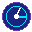

Website names and active time stay on this device. Tracking starts when you enable it. Private windows and page contents are excluded.
No activity recorded today. Enable tracking and browse to get started.